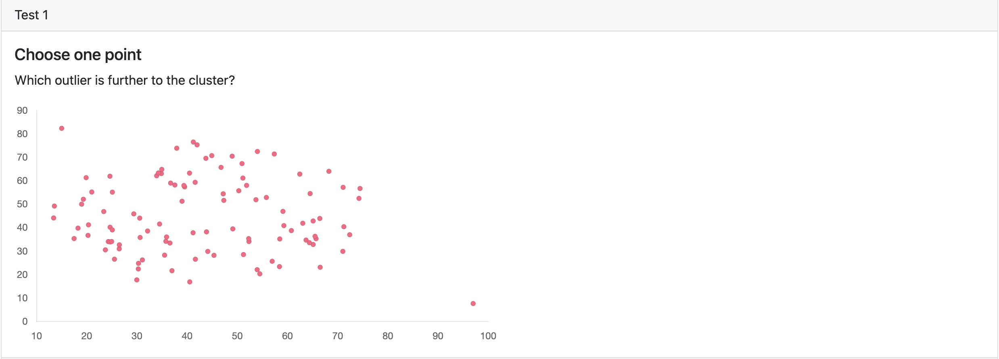

The task requires participants to analyze a scatterplot with two outliers and choose the one that is furthest from the cluster of points.
An outlier is a point that is located significantly away from other points in the scatterplot, and it can be used to identify unusual or unexpected patterns in the data.
The participants need to assess the distance between each outlier and the center of the cluster in the scatterplot. The outlier with the greater distance from the center of the cluster would be the one to choose.
Then, make the selection by clicking the outlier point of the scatterplot.
The scatterplot contains multiple points that are scattered.
Here is the example:

Try it Now